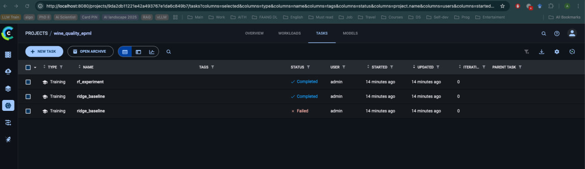

HW5 — отчет по ClearML (MLOps)
Развернут локальный ClearML Server, настроен трекинг экспериментов, регистрация моделей и базовый pipeline. Эксперименты и пайплайн зафиксированы в UI, артефакты и метрики сохраняются автоматически.
1. Настройка ClearML Server
- Использован официальный
docker-composeClearML Server, адаптирован под Docker Desktop (named volumes). - Сервисы: ClearML apiserver/webserver/fileserver + MongoDB + Elasticsearch + Redis.
- Порты:
- Web UI:
http://localhost:8080 - API:
http://localhost:8008 - Fileserver:
http://localhost:8081
Запуск:
docker compose -f configs/clearml_server.docker-compose.yml up -d
Проверка API:
curl http://localhost:8008/debug.ping
Аутентификация:
- UI логин: admin / clearml.
- Сгенерированы API keys, локальная настройка через clearml-init.
2. Трекинг экспериментов
Скрипт: scripts/clearml_experiment.py.
Что логируется:
- параметры и конфиг: task.connect(params)
- метрики: mae, rmse, r2, fit_seconds
- артефакты: метрики, предсказания, метаданные модели
- автологирование sklearn: auto_connect_frameworks={"scikit": True}
Пример запуска (2 эксперимента):
uv run python scripts/clearml_experiment.py --params configs/ridge_baseline.yaml --task-name ridge_baseline
uv run python scripts/clearml_experiment.py --params configs/rf_experiment.yaml --task-name rf_experiment
Факт запуска:
- ridge_baseline (task id 0e38fee3d9c74c34a3369ad2c8b84b1e)
- rf_experiment (task id 566d2e67317d4e3ca483eb03757c51a0)
Сравнение экспериментов:
- UI → Project wine_quality_epml → Experiments → таблица с сортировкой по метрикам.
3. Управление моделями
Регистрация и версионирование делаются в scripts/clearml_experiment.py:
- OutputModel.update_weights(...) — публикация артефакта модели
- OutputModel.set_metadata("meta", json) — метаданные (тип модели, параметры, фичи)
Версии формируются по task_id, сравнение — в Model Registry UI.
4. ClearML Pipeline
Скрипт: scripts/clearml_pipeline.py.
Pipeline шаги:
1) split → scripts/split_data.py
2) train → scripts/train_model.py
3) test → scripts/test_trained_model.py
Запуск:
uv run python scripts/clearml_pipeline.py --params params.yaml
Факт запуска:
- Pipeline task id: 06c4e546657848818e8dbf08b0d4a591
Мониторинг:
- UI → Project wine_quality_epml → Pipelines (граф и статусы шагов).
Уведомления: - UI → Settings → Notifications (по статусам задач).
Скриншоты
